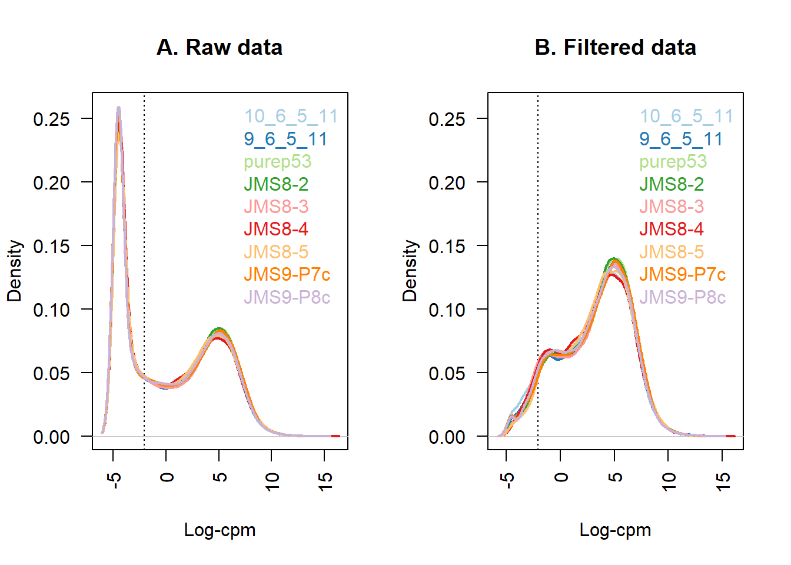
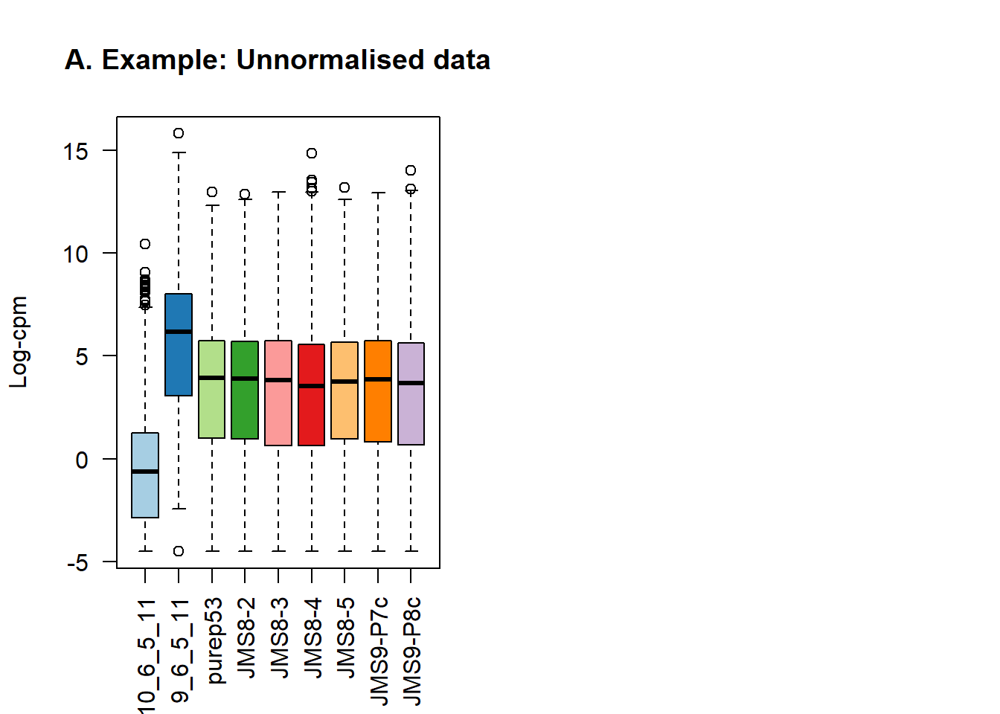
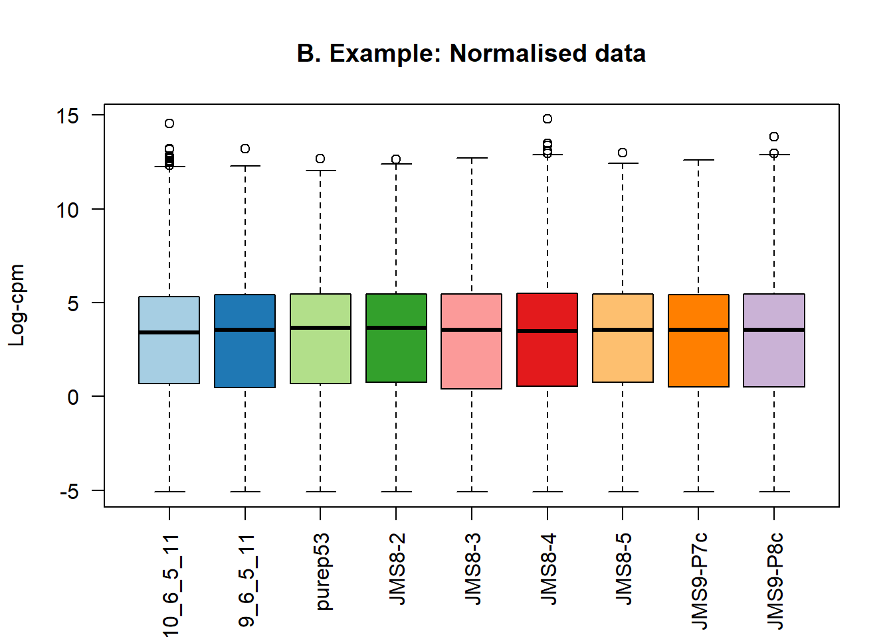
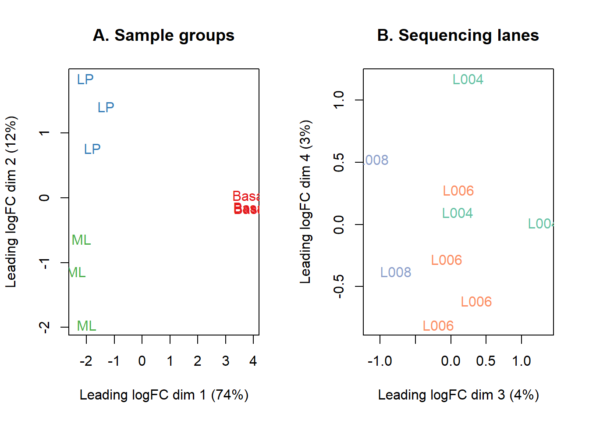
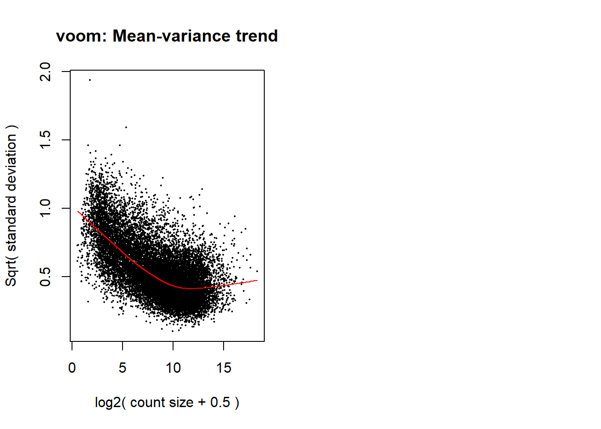
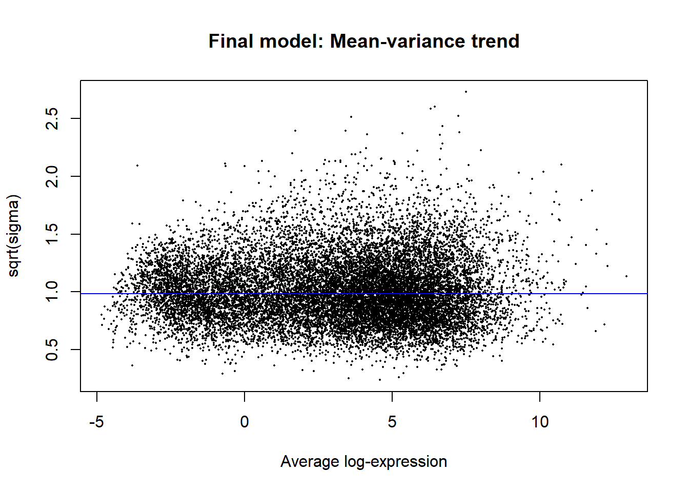
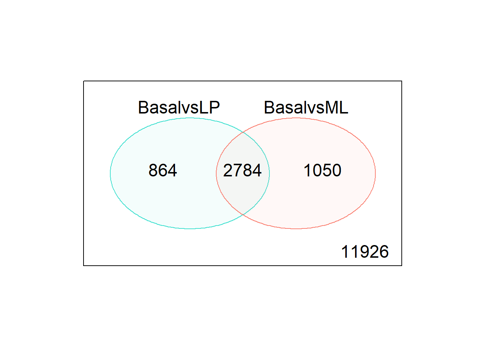
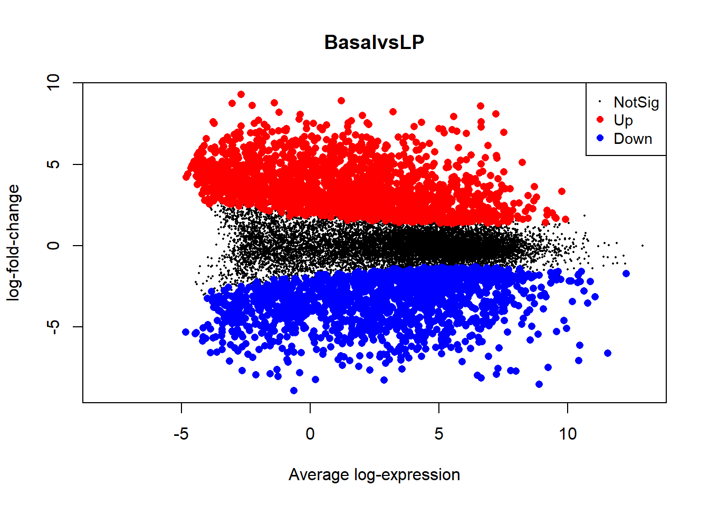
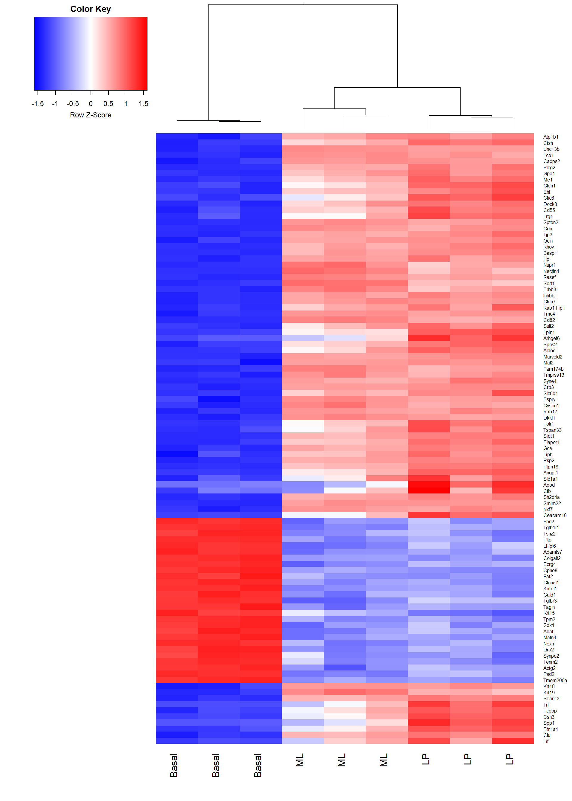
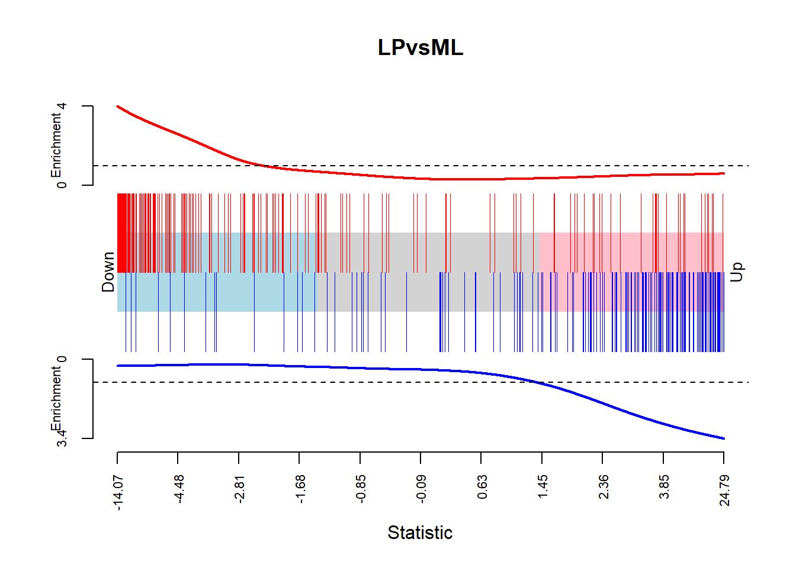

if (!requireNamespace("BiocManager", quietly = TRUE)) {
install.packages("BiocManager", repos = "https://cloud.r-project.org")
}
if (!requireNamespace("RNAseq123", quietly = TRUE)) {
BiocManager::install("RNAseq123", ask = FALSE, update = FALSE)
}
if (!requireNamespace("gplots", quietly = TRUE)) {
install.packages("gplots", repos = "https://cloud.r-project.org")
}
library(limma)
library(Glimma)
library(edgeR)
library(Mus.musculus)
library(gplots)
library(RNAseq123)RNA123_analysis_file
Introduction:
This file contains an example analysis of using the RNAseq123 workflow package from BioConductor. The authors of this pipeline, the vignette, and the code used in this example are Charity Law, Monther Alhamdoosh, Shian Su, Xeuyi Dong, Luyi Tian, Gordon Smyth, and Matthew Ritchie. Their code has been reproduced here for the purpose of an academic exercise. The authors of this academic exercise do not claim any authorship of the code, but only of the academic exercise.
The vignette outlines a workflow for the processing and analysis of RNA-seq data, starting with a file of raw gene-level counts. The workflow makes use of the pre-processing and statistical functions in the edgeR and limma packages as well as the interactive graphics of the Glimma package. The experimental data used is from the study ” A pooled shRNA screen for regulators of primary mammary stem and progenitor cells identifies roles for Asap1 and Prox1” by Sheridan et al. Total RNA samples were extracted from the mammary glands of female virgin mice with cells sorted into basal, progenitor luminal, and mature luminal groups. Cells of the mammary gland are very useful for RNA research as they are highly regenerative and can give insights into the action of stem cells and mechanics of cancers. Variation in gene counts identifies genes that are up or down regulated in different cell types or due to certain stimuli.
Prepare Environment for analysis:
Install RNAseq123 in RGui as recommended by BioConductor instructions. The heatmap section also requires the CRAN package gplots.
Load needed packages:
Experimental Data
Load in test case data:
Only selected files are grouped into “files” to create a smaller dataset only including the basal, ML, and LP samples from the experiment. The function gunzip from R.utils unzips the .gz files.
url <- "https://www.ncbi.nlm.nih.gov/geo/download/?acc=GSE63310&format=file"
utils::download.file(url, destfile="GSE63310_RAW.tar", mode="wb")
utils::untar("GSE63310_RAW.tar", exdir = ".")
files <- c("GSM1545535_10_6_5_11.txt", "GSM1545536_9_6_5_11.txt", "GSM1545538_purep53.txt",
"GSM1545539_JMS8-2.txt", "GSM1545540_JMS8-3.txt", "GSM1545541_JMS8-4.txt",
"GSM1545542_JMS8-5.txt", "GSM1545544_JMS9-P7c.txt", "GSM1545545_JMS9-P8c.txt")
for(i in paste(files, ".gz", sep=""))
R.utils::gunzip(i, overwrite=TRUE)Each file represents the data from an individual sample. Looking at the first few lines of the first file we can see that it contains gene counts by EntrezID and also the length of each gene.
read.delim(files[1], nrow=5) EntrezID GeneLength Count
1 497097 3634 1
2 100503874 3259 0
3 100038431 1634 0
4 19888 9747 0
5 20671 3130 1The EdgeR package contains the function readDGE, which can take the individual files uploaded and create a count matrix.
x <- readDGE(files, columns=c(1,3))
class(x)[1] "DGEList"
attr(,"package")
[1] "edgeR"dim(x)[1] 27179 9The DGElist “x” that was created contains the count matrix and a dataframe called “samples” which contains experimental metadata that we want to associate with the counts.
samplenames <- substring(colnames(x), 12, nchar(colnames(x)))
samplenames[1] "10_6_5_11" "9_6_5_11" "purep53" "JMS8-2" "JMS8-3" "JMS8-4"
[7] "JMS8-5" "JMS9-P7c" "JMS9-P8c" colnames(x) <- samplenames
group <- as.factor(c("LP", "ML", "Basal", "Basal", "ML", "LP",
"Basal", "ML", "LP"))
x$samples$group <- group
lane <- as.factor(rep(c("L004","L006","L008"), c(3,4,2)))
x$samples$lane <- lane
x$samples files group lib.size norm.factors lane
10_6_5_11 GSM1545535_10_6_5_11.txt LP 32863052 1 L004
9_6_5_11 GSM1545536_9_6_5_11.txt ML 35335491 1 L004
purep53 GSM1545538_purep53.txt Basal 57160817 1 L004
JMS8-2 GSM1545539_JMS8-2.txt Basal 51368625 1 L006
JMS8-3 GSM1545540_JMS8-3.txt ML 75795034 1 L006
JMS8-4 GSM1545541_JMS8-4.txt LP 60517657 1 L006
JMS8-5 GSM1545542_JMS8-5.txt Basal 55086324 1 L006
JMS9-P7c GSM1545544_JMS9-P7c.txt ML 21311068 1 L008
JMS9-P8c GSM1545545_JMS9-P8c.txt LP 19958838 1 L008In order to annotate the genes in the counts matrix we can use the package Mus. musculus, which interfaces with Ensembl genome databases to pull gene symbols and chromosome information based on the Entrez IDs in our genes dataframe.
geneid <- rownames(x)
genes <- select(Mus.musculus, keys=geneid, columns=c("SYMBOL", "TXCHROM"),
keytype="ENTREZID")'select()' returned 1:many mapping between keys and columnshead(genes) ENTREZID SYMBOL TXCHROM
1 497097 Xkr4 chr1
2 100503874 Gm19938 <NA>
3 100038431 Gm10568 <NA>
4 19888 Rp1 chr1
5 20671 Sox17 chr1
6 27395 Mrpl15 chr1There are some duplicated gene IDs in our dataset due to genes mapping to multiple chromosomes. A simple, although not the most accurate, way to eliminate the duplicates is to only keep the first occurrence of each gene ID.
genes <- genes[!duplicated(genes$ENTREZID),]We can then add the cleaned dataframe back into the DGElist object x. Now we have a count matrix with associated experimental information and gene information, ready for further processing.
x$genes <- genes
xAn object of class "DGEList"
$samples
files group lib.size norm.factors lane
10_6_5_11 GSM1545535_10_6_5_11.txt LP 32863052 1 L004
9_6_5_11 GSM1545536_9_6_5_11.txt ML 35335491 1 L004
purep53 GSM1545538_purep53.txt Basal 57160817 1 L004
JMS8-2 GSM1545539_JMS8-2.txt Basal 51368625 1 L006
JMS8-3 GSM1545540_JMS8-3.txt ML 75795034 1 L006
JMS8-4 GSM1545541_JMS8-4.txt LP 60517657 1 L006
JMS8-5 GSM1545542_JMS8-5.txt Basal 55086324 1 L006
JMS9-P7c GSM1545544_JMS9-P7c.txt ML 21311068 1 L008
JMS9-P8c GSM1545545_JMS9-P8c.txt LP 19958838 1 L008
$counts
Samples
Tags 10_6_5_11 9_6_5_11 purep53 JMS8-2 JMS8-3 JMS8-4 JMS8-5 JMS9-P7c
497097 1 2 342 526 3 3 535 2
100503874 0 0 5 6 0 0 5 0
100038431 0 0 0 0 0 0 1 0
19888 0 1 0 0 17 2 0 1
20671 1 1 76 40 33 14 98 18
Samples
Tags JMS9-P8c
497097 0
100503874 0
100038431 0
19888 0
20671 8
27174 more rows ...
$genes
ENTREZID SYMBOL TXCHROM
1 497097 Xkr4 chr1
2 100503874 Gm19938 <NA>
3 100038431 Gm10568 <NA>
4 19888 Rp1 chr1
5 20671 Sox17 chr1
27174 more rows ...The raw counts need to be transformed to account for differences in sequencing depth between libraries. The EdgeR functions cpm and lcpm can be used to transform the raw counts into “counts per million” and “log2 counts per million”, respectively.
cpm <- cpm(x)
lcpm <- cpm(x, log=TRUE)A count of zero for this data equates to log- CPM value of -4.51.
L <- mean(x$samples$lib.size) * 1e-6
M <- median(x$samples$lib.size) * 1e-6
c(L, M)[1] 45.48855 51.36862summary(lcpm) 10_6_5_11 9_6_5_11 purep53 JMS8-2
Min. :-4.5074 Min. :-4.5074 Min. :-4.50743 Min. :-4.5074
1st Qu.:-4.5074 1st Qu.:-4.5074 1st Qu.:-4.50743 1st Qu.:-4.5074
Median :-0.6847 Median :-0.3589 Median :-0.09513 Median :-0.0901
Mean : 0.1714 Mean : 0.3312 Mean : 0.43559 Mean : 0.4089
3rd Qu.: 4.2913 3rd Qu.: 4.5601 3rd Qu.: 4.60081 3rd Qu.: 4.5475
Max. :14.7632 Max. :13.4952 Max. :12.95700 Max. :12.8513
JMS8-3 JMS8-4 JMS8-5 JMS9-P7c
Min. :-4.5074 Min. :-4.5074 Min. :-4.50743 Min. :-4.5074
1st Qu.:-4.5074 1st Qu.:-4.5074 1st Qu.:-4.50743 1st Qu.:-4.5074
Median :-0.4281 Median :-0.4064 Median :-0.07152 Median :-0.1704
Mean : 0.3225 Mean : 0.2529 Mean : 0.40428 Mean : 0.3708
3rd Qu.: 4.5772 3rd Qu.: 4.3199 3rd Qu.: 4.42513 3rd Qu.: 4.6031
Max. :12.9578 Max. :14.8520 Max. :13.19491 Max. :12.9413
JMS9-P8c
Min. :-4.5074
1st Qu.:-4.5074
Median :-0.3300
Mean : 0.2749
3rd Qu.: 4.4355
Max. :14.0102 Genes that are not expressed (or very lowly expressed) in any of the experimental conditions are not of interest in this analysis. To simplify all downstream analysis, the EdgeR function filterByExpr can be used to filter out all genes that have insignificant counts.
table(rowSums(x$counts==0)==9)
FALSE TRUE
22026 5153 keep.exprs <- filterByExpr(x, group=group)
x <- x[keep.exprs,, keep.lib.sizes=FALSE]
dim(x)[1] 16624 9The code below will produce a figure by which we can compare our raw data to our newly filtered and cleaned data.
lcpm.cutoff <- log2(10/M + 2/L)
library(RColorBrewer)
nsamples <- ncol(x)
col <- brewer.pal(nsamples, "Paired")
par(mfrow=c(1,2))
plot(density(lcpm[,1]), col=col[1], lwd=2, ylim=c(0,0.26), las=2, main="", xlab="")
title(main="A. Raw data", xlab="Log-cpm")
abline(v=lcpm.cutoff, lty=3)
for (i in 2:nsamples){
den <- density(lcpm[,i])
lines(den$x, den$y, col=col[i], lwd=2)
}
legend("topright", samplenames, text.col=col, bty="n")
lcpm <- cpm(x, log=TRUE)
plot(density(lcpm[,1]), col=col[1], lwd=2, ylim=c(0,0.26), las=2, main="", xlab="")
title(main="B. Filtered data", xlab="Log-cpm")
abline(v=lcpm.cutoff, lty=3)
for (i in 2:nsamples){
den <- density(lcpm[,i])
lines(den$x, den$y, col=col[i], lwd=2)
}
legend("topright", samplenames, text.col=col, bty="n")
Due to the large number of variables and possible batch effects in sequencing experiments, all gene expression data should be normalized prior to further analysis. The edgeR function calcNormFactors can be used to normalize by the method of trimmed mean of M-values.
x <- calcNormFactors(x, method = "TMM")
x$samples$norm.factors[1] 0.8943956 1.0250186 1.0459005 1.0458455 1.0162707 0.9217132 0.9961959
[8] 1.0861026 0.9839203The effect of the normalization is not large in this dataset as the distribution of log-CPM values are similar for the samples in this dataset. The code below will adjust the distributions to give a better visualization of the effects of a normalization.
x2 <- x
x2$samples$norm.factors <- 1
x2$counts[,1] <- ceiling(x2$counts[,1]*0.05)
x2$counts[,2] <- x2$counts[,2]*5par(mfrow=c(1,2))
lcpm <- cpm(x2, log=TRUE)
boxplot(lcpm, las=2, col=col, main="")
title(main="A. Example: Unnormalised data",ylab="Log-cpm")
x2 <- calcNormFactors(x2)
x2$samples$norm.factors[1] 0.05770899 6.08287835 1.22023972 1.16478991 1.19661094 1.04659233 1.15048074
[8] 1.25431164 1.10901983
lcpm <- cpm(x2, log=TRUE)
boxplot(lcpm, las=2, col=col, main="")
title(main="B. Example: Normalised data",ylab="Log-cpm")
An unsupervised clustering analysis can be performed to take a quick look at the magnitude of differential expression that we can expect to find in further analyses. It can also call out possible issues such as sample switches if any replicates or samples of the same grouping are far from each other. The limma function plotMDS can be used a create multi-dimensional scaling plots.
lcpm <- cpm(x, log=TRUE)
par(mfrow=c(1,2))
col.group <- group
levels(col.group) <- brewer.pal(nlevels(col.group), "Set1")
col.group <- as.character(col.group)
col.lane <- lane
levels(col.lane) <- brewer.pal(nlevels(col.lane), "Set2")
col.lane <- as.character(col.lane)
plotMDS(lcpm, labels=group, col=col.group)
title(main="A. Sample groups")
plotMDS(lcpm, labels=lane, col=col.lane, dim=c(3,4))
title(main="B. Sequencing lanes")
Or, alternatively, the Glimma function glMDSPlot can be used to create an interactive plot in an html page.
glMDSPlot(lcpm, labels=paste(group, lane, sep="_"),
groups=x$samples[,c(2,5)], launch=FALSE)Differential expression analysis:
Contrast Matrix
The stats package function model.matrix is used to create a design matrix wherein categorical variables are transformed to numeric variables, so that the data can be fitted to regression models. Here the variables tested are sample group(cell type) and sequencing lane. The “~0+group” removes the intercept from the first factor, group, but not from the second factor, lane.
design <- model.matrix(~0+group+lane)
colnames(design) <- gsub("group", "", colnames(design))
design Basal LP ML laneL006 laneL008
1 0 1 0 0 0
2 0 0 1 0 0
3 1 0 0 0 0
4 1 0 0 1 0
5 0 0 1 1 0
6 0 1 0 1 0
7 1 0 0 1 0
8 0 0 1 0 1
9 0 1 0 0 1
attr(,"assign")
[1] 1 1 1 2 2
attr(,"contrasts")
attr(,"contrasts")$group
[1] "contr.treatment"
attr(,"contrasts")$lane
[1] "contr.treatment"The limma function makeContrasts can be used to make pair-wise comparisons between factors.
contr.matrix <- makeContrasts(
BasalvsLP = Basal-LP,
BasalvsML = Basal - ML,
LPvsML = LP - ML,
levels = colnames(design))
contr.matrix Contrasts
Levels BasalvsLP BasalvsML LPvsML
Basal 1 1 0
LP -1 0 1
ML 0 -1 -1
laneL006 0 0 0
laneL008 0 0 0Removing Heteroscedascity:
Heteroscedascity occurs when the variance (measure of error) is not the same across the independent variables.
par(mfrow=c(1,2))
v <- voom(x, design, plot=TRUE)
vAn object of class "EList"
$genes
ENTREZID SYMBOL TXCHROM
1 497097 Xkr4 chr1
5 20671 Sox17 chr1
6 27395 Mrpl15 chr1
7 18777 Lypla1 chr1
9 21399 Tcea1 chr1
16619 more rows ...
$targets
files group lib.size norm.factors lane
10_6_5_11 GSM1545535_10_6_5_11.txt LP 29387429 0.8943956 L004
9_6_5_11 GSM1545536_9_6_5_11.txt ML 36212498 1.0250186 L004
purep53 GSM1545538_purep53.txt Basal 59771061 1.0459005 L004
JMS8-2 GSM1545539_JMS8-2.txt Basal 53711278 1.0458455 L006
JMS8-3 GSM1545540_JMS8-3.txt ML 77015912 1.0162707 L006
JMS8-4 GSM1545541_JMS8-4.txt LP 55769890 0.9217132 L006
JMS8-5 GSM1545542_JMS8-5.txt Basal 54863512 0.9961959 L006
JMS9-P7c GSM1545544_JMS9-P7c.txt ML 23139691 1.0861026 L008
JMS9-P8c GSM1545545_JMS9-P8c.txt LP 19634459 0.9839203 L008
$E
Samples
Tags 10_6_5_11 9_6_5_11 purep53 JMS8-2 JMS8-3 JMS8-4 JMS8-5
497097 -4.292165 -3.856488 2.5185849 3.2931366 -4.459730 -3.994060 3.2869677
20671 -4.292165 -4.593453 0.3560126 -0.4073032 -1.200995 -1.943434 0.8442767
27395 3.876089 4.413107 4.5170045 4.5617546 4.344401 3.786363 3.8990635
18777 4.708774 5.571872 5.3964008 5.1623650 5.649355 5.081611 5.0602470
21399 4.785541 4.754537 5.3703795 5.1220551 4.869586 4.943840 5.1384776
Samples
Tags JMS9-P7c JMS9-P8c
497097 -3.2103696 -5.295316
20671 -0.3228444 -1.207853
27395 4.3396075 4.124644
18777 5.7513694 5.142436
21399 5.0308985 4.979644
16619 more rows ...
$weights
[,1] [,2] [,3] [,4] [,5] [,6] [,7]
[1,] 1.079413 1.332986 19.826915 20.273253 1.993686 1.395853 20.494977
[2,] 1.170357 1.456380 4.804866 8.660025 3.612508 2.626870 8.760149
[3,] 20.219073 25.573792 30.434759 28.528310 31.352260 25.743247 28.722497
[4,] 26.947557 32.505933 33.583128 33.232125 34.231754 32.354158 33.334340
[5,] 26.610864 28.501638 33.645479 33.206374 33.573492 31.996623 33.308490
[,8] [,9]
[1,] 1.107780 1.079413
[2,] 3.211473 2.541942
[3,] 21.200072 16.657930
[4,] 30.348630 24.259801
[5,] 25.171513 23.573305
16619 more rows ...
$design
Basal LP ML laneL006 laneL008
1 0 1 0 0 0
2 0 0 1 0 0
3 1 0 0 0 0
4 1 0 0 1 0
5 0 0 1 1 0
6 0 1 0 1 0
7 1 0 0 1 0
8 0 0 1 0 1
9 0 1 0 0 1
attr(,"assign")
[1] 1 1 1 2 2
attr(,"contrasts")
attr(,"contrasts")$group
[1] "contr.treatment"
attr(,"contrasts")$lane
[1] "contr.treatment"
vfit <- lmFit(v, design)
vfit <- contrasts.fit(vfit, contrasts=contr.matrix)
efit <- eBayes(vfit)
plotSA(efit, main="Final model: Mean-variance trend")
Differential expression genes summary:
The limma package contains several functions for linear modeling that fit a separate model to the expression values for each gene. The decideTests function can take the fitted model object and classify each gene as being significantly downregulated, upregulated, or not significant. A summary of these results is produced below.
summary(decideTests(efit)) BasalvsLP BasalvsML LPvsML
Down 4648 4927 3135
NotSig 7113 7026 10972
Up 4863 4671 2517Some studies require that the log-fold-changes be above a certain value to be considered significant. The “treat” method can be used to specify this minimum value. In the table below one can see that this specification does place considerably more genes in the Not Significant categories.
tfit <- treat(vfit, lfc=1)
dt <- decideTests(tfit)
summary(dt) BasalvsLP BasalvsML LPvsML
Down 1632 1777 224
NotSig 12976 12790 16210
Up 2016 2057 190The following code can be used to find genes that are DE in more than one group.The number of DE genes in common between groups can be easily summarized using vennDiagram.
de.common <- which(dt[,1]!=0 & dt[,2]!=0)
length(de.common)[1] 2784head(tfit$genes$SYMBOL[de.common], n=20) [1] "Xkr4" "Rgs20" "Cpa6" "A830018L16Rik"
[5] "Sulf1" "Eya1" "Msc" "Sbspon"
[9] "Pi15" "Crispld1" "Kcnq5" "Rims1"
[13] "Khdrbs2" "Ptpn18" "Prss39" "Arhgef4"
[17] "Cnga3" "Cracdl" "Aff3" "Npas2" vennDiagram(dt[,1:2], circle.col=c("turquoise", "salmon"))
The write.fit function will pull the results from the comparisons and write them to a file.
write.fit(tfit, dt, file="results.txt")Individual DE genes:
The topTreat (or topTable for results using eBayes statistics) function will show a list of the DE genes from smallest to largest adjusted p-value.
basal.vs.lp <- topTreat(tfit, coef=1, n=Inf)
basal.vs.ml <- topTreat(tfit, coef=2, n=Inf)
head(basal.vs.lp) ENTREZID SYMBOL TXCHROM logFC AveExpr t P.Value
12759 12759 Clu chr14 -5.455444 8.856581 -33.55508 1.723731e-10
53624 53624 Cldn7 chr11 -5.527356 6.295437 -31.97515 2.576972e-10
242505 242505 Rasef chr4 -5.935249 5.118259 -31.33407 3.081544e-10
67451 67451 Pkp2 chr16 -5.738665 4.419170 -29.85616 4.575686e-10
228543 228543 Rhov chr2 -6.264208 5.485314 -29.07484 5.782844e-10
70350 70350 Basp1 chr15 -6.084738 5.247023 -28.26649 7.267694e-10
adj.P.Val
12759 1.707586e-06
53624 1.707586e-06
242505 1.707586e-06
67451 1.739242e-06
228543 1.739242e-06
70350 1.739242e-06head(basal.vs.ml) ENTREZID SYMBOL TXCHROM logFC AveExpr t P.Value
242505 242505 Rasef chr4 -6.534668 5.118259 -35.08270 1.226399e-10
53624 53624 Cldn7 chr11 -5.495888 6.295437 -31.68918 2.774140e-10
12521 12521 Cd82 chr2 -4.690834 7.069637 -31.43063 2.913572e-10
20661 20661 Sort1 chr3 -4.931660 6.704459 -30.70113 3.558720e-10
71740 71740 Nectin4 chr1 -5.581283 5.164967 -30.59775 3.718157e-10
12759 12759 Clu chr14 -4.686826 8.856581 -27.95760 7.687544e-10
adj.P.Val
242505 1.236213e-06
53624 1.236213e-06
12521 1.236213e-06
20661 1.236213e-06
71740 1.236213e-06
12759 1.480434e-06Graphics for DE results:
A mean-difference plot can be used to visually summarize the results for all genes. The plotMD function can display the log-FC values against the average log-CPM values. As with most plots, the Glimma package can also be used to create an interactive plot in a separate html page.
plotMD(tfit, column=1, status=dt[,1], main=colnames(tfit)[1],
xlim=c(-8,13))
glMDPlot(tfit, coef=1, status=dt, main=colnames(tfit)[1],
side.main="ENTREZID", counts=lcpm, groups=group, launch=FALSE)Heat maps are very useful for visualizing portions of DE data. The heatmap.2 function from the gplots package is used here to create a heatmap of the top 100 DE genes from the basal vs LP contrast analysis.
basal.vs.lp.topgenes <- basal.vs.lp$ENTREZID[1:100]
i <- which(v$genes$ENTREZID %in% basal.vs.lp.topgenes)
mycol <- colorpanel(1000,"blue","white","red")
heatmap.2(lcpm[i,], scale="row",
labRow=v$genes$SYMBOL[i], labCol=group,
col=mycol, trace="none", density.info="none",
margin=c(6,4), cexRow=0.6, lhei=c(2,10), dendrogram="column")
Gene set testing with camera
load(system.file("extdata", "mouse_c2_v5p1.rda", package = "RNAseq123"))
idx <- ids2indices(Mm.c2,id=rownames(v))
cam.BasalvsLP <- camera(v,idx,design,contrast=contr.matrix[,1])
head(cam.BasalvsLP,5) NGenes Direction PValue
LIM_MAMMARY_STEM_CELL_UP 791 Up 1.768426e-18
LIM_MAMMARY_STEM_CELL_DN 683 Down 4.027711e-14
ROSTY_CERVICAL_CANCER_PROLIFERATION_CLUSTER 170 Up 5.518131e-14
LIM_MAMMARY_LUMINAL_PROGENITOR_UP 94 Down 2.737492e-13
SOTIRIOU_BREAST_CANCER_GRADE_1_VS_3_UP 190 Up 5.155264e-13
FDR
LIM_MAMMARY_STEM_CELL_UP 8.355813e-15
LIM_MAMMARY_STEM_CELL_DN 8.691057e-11
ROSTY_CERVICAL_CANCER_PROLIFERATION_CLUSTER 8.691057e-11
LIM_MAMMARY_LUMINAL_PROGENITOR_UP 3.233663e-10
SOTIRIOU_BREAST_CANCER_GRADE_1_VS_3_UP 4.871724e-10cam.BasalvsML <- camera(v,idx,design,contrast=contr.matrix[,2])
head(cam.BasalvsML,5) NGenes Direction PValue FDR
LIM_MAMMARY_STEM_CELL_UP 791 Up 1.676651e-22 7.922177e-19
LIM_MAMMARY_STEM_CELL_DN 683 Down 7.790412e-18 1.840485e-14
LIM_MAMMARY_LUMINAL_MATURE_DN 172 Up 9.744096e-16 1.534695e-12
LIM_MAMMARY_LUMINAL_MATURE_UP 204 Down 1.151832e-12 1.360602e-09
NAKAYAMA_SOFT_TISSUE_TUMORS_PCA2_UP 137 Up 2.240253e-12 1.880160e-09cam.LPvsML <- camera(v,idx,design,contrast=contr.matrix[,3])
head(cam.LPvsML,5) NGenes Direction PValue
LIM_MAMMARY_LUMINAL_MATURE_DN 172 Up 6.733173e-14
LIM_MAMMARY_LUMINAL_MATURE_UP 204 Down 9.967980e-14
LIM_MAMMARY_LUMINAL_PROGENITOR_UP 94 Up 1.317692e-11
REACTOME_RESPIRATORY_ELECTRON_TRANSPORT 94 Down 7.013195e-09
REACTOME_RNA_POL_I_PROMOTER_OPENING 46 Down 2.037210e-08
FDR
LIM_MAMMARY_LUMINAL_MATURE_DN 2.354935e-10
LIM_MAMMARY_LUMINAL_MATURE_UP 2.354935e-10
LIM_MAMMARY_LUMINAL_PROGENITOR_UP 2.075364e-08
REACTOME_RESPIRATORY_ELECTRON_TRANSPORT 8.284337e-06
REACTOME_RNA_POL_I_PROMOTER_OPENING 1.925163e-05barcodeplot(efit$t[,3], index=idx$LIM_MAMMARY_LUMINAL_MATURE_UP,
index2=idx$LIM_MAMMARY_LUMINAL_MATURE_DN, main="LPvsML")